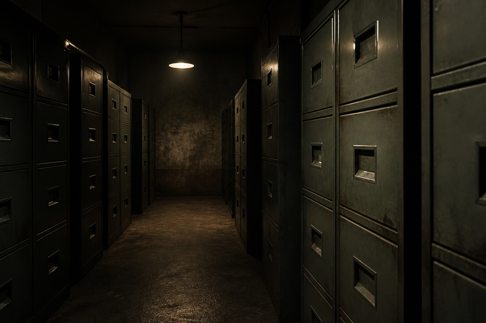

Public layer keeps the exhibit wording, so the web catalog can be searched. Internal layer records the east bound that fights the 1991 house-plot notice, and the qianzhu change from elder brother to younger. Restricted layer locks the original-slip transcription. Night shift is default-out.
Wangzhe field: Hou Chengshan was buried separately at East Ridge. The deceased line on this deed was altered later. Who it named before the alteration is in the restricted cabinet. I did not sync that line to the public site, and I did not put it back on the exhibit card.
The split is a rule, not a disappearing act. Anyone who writes the restricted layer onto a table that can be projected owns the questions. Spare badge is in my drawer. If night shift has to use it, look in mail.

This memo is a reason for sorting. It is not an exhumation record, and it is not “the archive has determined the original slip is the unique authentic deed.”